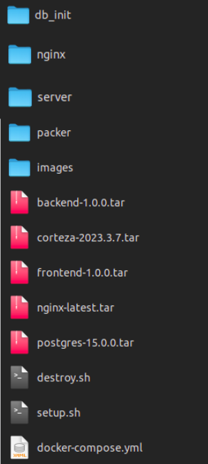
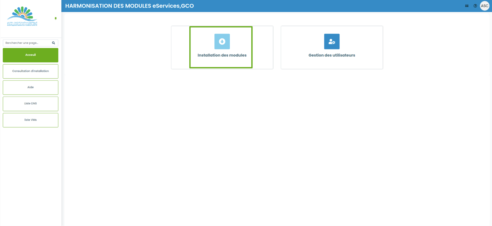
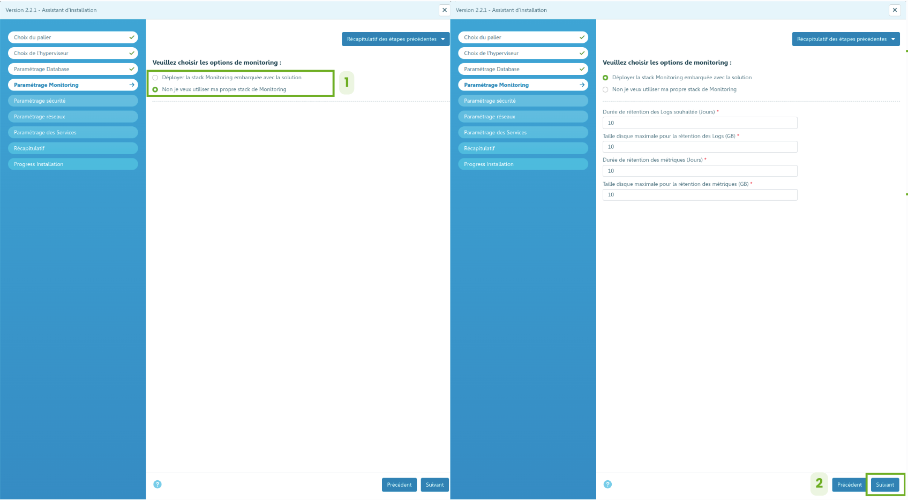
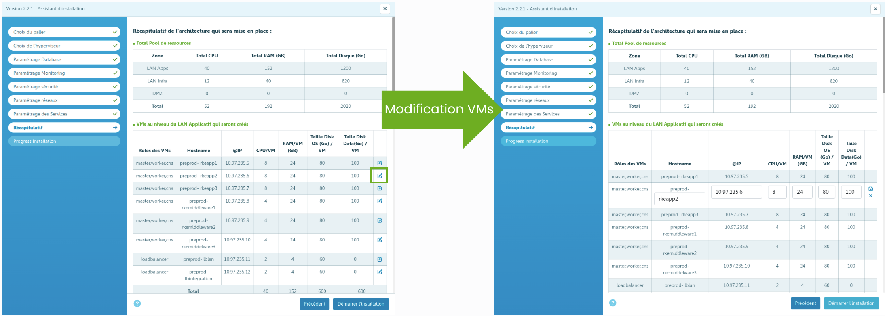
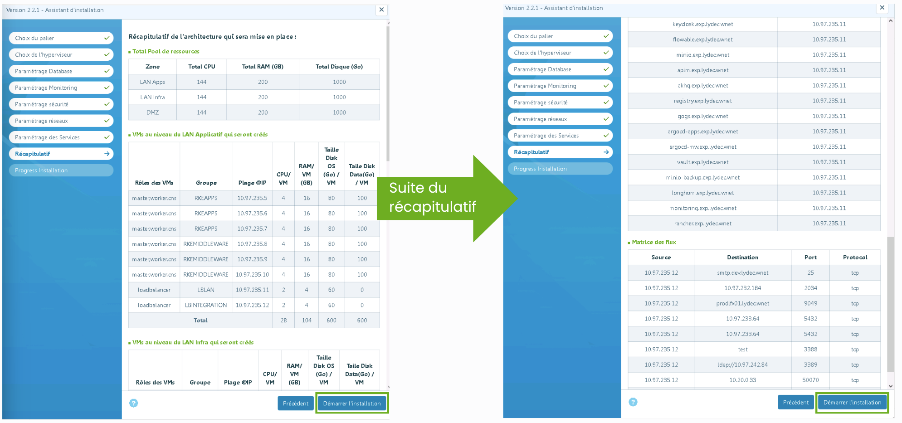
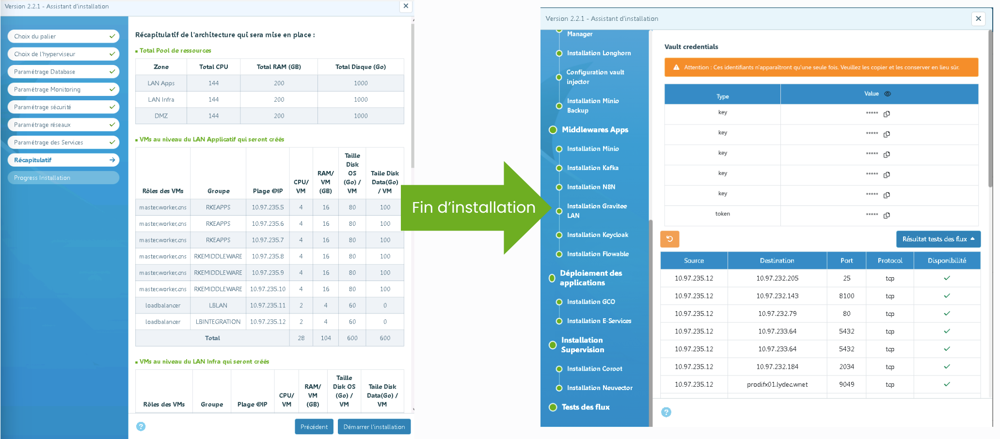

1 – Rappel des objectifs
Les principaux objectifs du projet sont :
- Automatisation du déploiement : Mise en place d’une approche Infrastructure as Code (IaC) pour automatiser le déploiement des infrastructures, outils d'intégration et applications, garantissant des mises en production rapides, fiables et répétables.
- Harmonisation architecturale vers les micro-services : Migration progressive vers une architecture micro-services pour simplifier la maintenance, améliorer l’intégration avec des systèmes tiers, accélérer l’évolution des applications et limiter les perturbations en production.
- Autonomisation des propriétaires d’applications : Facilitation de la gestion des configurations et ajustements grâce à des interfaces d’administration centralisées et intuitives, renforçant ainsi l’autonomie des équipes.
- Déploiements Cloud Ready : Conception de solutions optimisées pour le cloud avec une documentation complète, permettant une gestion autonome et une adaptation fluide aux environnements modernes.
- Respect des délais et gouvernance projet : Exécution rigoureuse du projet, avec un objectif de finalisation complète sous 18 mois.
2 – Etapes d’installation
Prérequis
Avant de commencer l'installation, veuillez vous assurer que votre environnement respecte les prérequis suivants :
-
Machine bastion :
- CPU : 4 cœurs minimum
- RAM : 8 Go minimum
- Stockage : 80 Go d'espace disque disponible
-
Système d'exploitation :
- Une distribution Linux est requise (ex: Ubuntu, Red Hat Enterprise Linux).
-
Logiciels :
- Docker et Docker Compose doivent être installés et fonctionnels.
- Pour l'installation, suivez la documentation officielle :
- Docker : https://docs.docker.com/engine/install/
- Docker Compose : https://docs.docker.com/compose/install/
- Docker et Docker Compose doivent être installés en exécutant les commandes
suivantes :
yum config-manager --add-repo https://download.docker.com/linux/rhel/docker-ce.repo yum install -y docker-ce docker-ce-cli containerd.io systemctl enable docker systemctl start docker
Note : L'utilisateur doit être ajouté au groupe sudo pour
installer et
configurer Docker.
Opérations avant installation
Cette section décrit les étapes préparatoires avant de lancer l'installateur.
-
Récupération du dossier d'installation :
Assurez-vous d'avoir accès au dossier d'installation. Toutes les commandes ci-dessous doivent être exécutées depuis la racine de ce dossier.
Le dossier doit contenir l'arborescence suivante :
 -
Suppression d'une installation précédente (Optionnelle) :
Si vous avez une installation existante et que vous souhaitez la supprimer, exécutez le script de suppression :sudo chmod -R 777 data/terraform/ sudo chmod +x ./destroy.sh ./destroy.sh -
Déploiement des images Packer (si nécessaire) :
Si les images de machine virtuelle ne sont pas déjà disponibles dans votre hyperviseur, vous devez les construire avec Packer.- Installez Packer en suivant la documentation officielle.
-
Dans le dossier
packernaviguez vers le dossier du template à utiliser (par exemple,harmo-docker-agents). -
Initialisez Packer :
packer init . -
Validez la configuration :
packer validate . -
Lancez la construction de l'image :
packer build .
Lancement de l'installation du wizard
Une fois les prérequis et les opérations préliminaires effectués, vous pouvez lancer l'installation du wizard.
-
Rendez le script d'installation exécutable :
sudo chmod +x ./setup.sh -
Exécutez le script :
./setup.sh
Une fois le script exécuté, ouvrez votre navigateur web et saisissez directement l'adresse IP de la machine sur laquelle vous avez effectué l'installation. L'interface de configuration sera alors accessible via cette adresse.
Vous serez ensuite redirigé vers l'écran de connexion. Veuillez utiliser les identifiants fournis pour vous connecter.
Sélection de ‘Installation des modules’
Sélection de EService

- Cocher ‘Eservice’ et/ou ‘GCO’ pour lancer l’installation
- Cliquer sur Suivant
Choix du Palier
- Sélectionner un des 4 paliers possible
- Cliquer sur Suivant
Choix de l’hyperviseur
- 1. Renseigner vos données de l’hyperviseur
- 2. Cliquer sur « Tester la connexion »
- 3. Si ‘Connexion OK’ cliquer sur le bouton ‘Ajouter’
- 4. Vérification de l’ajout de la VM
- 5. Si vous souhaitez modifier une VM, cliquer sur le bouton ‘modifier’.
- 6. Si vous souhaitez supprimer une VM, cliquer sur le bouton ‘supprimer’
- 7. Cliquer sur ‘Suivant’ pour passer à l’étape suivante.
Paramétrage Database
Remarque : la liste des bases de données varie selon le choix initial (« Eservice » et/ou « GCO »).
- 1. Cliquer sur le bouton Radio Informix / Postgresql
- 2. Choisir un type de la base de données
- 3. Renseignez vos données (l’Utilisateur et le Mot de passe doivent être encodés en Base64)
- 4. Cliquer sur ‘Tester la connexion’
- 5. Si ‘Connexion OK’ cliquer sur le bouton ‘Ajouter’
- 6. Vérification de l’ajout de la base de données
- 7. Si vous souhaitez modifier une base de données, cliquer sur le bouton ‘modifier’.
- 8. En cas de souhait de suppression , cliquer sur le bouton ‘supprimer’
- 9. Cliquer sur ‘Suivant’
Remarque : vous ne pouvez pas cliquer sur « Suivant » sans avoir ajouté toutes les bases de données.
Paramétrage Monitoring
- 1. Cocher un des deux boutons Radio
- 2. Cliquer sur Suivant
Paramétrage Sécurité
- Activer ou désactiver l’option « Utiliser un proxy internet »
- Renseigner le « Host Proxy »
- Renseigner le « Port Proxy »
- Renseigner la « Public Key SSH »
- Renseigner la « Private Key SSH »
- Cliquer sur « Tester SSH Keys »
- Renseigner le « Base Domain Name »
- Renseigner le préfixe de l’environnement (exemple "pre" pour environnement pre-prod).
- Renseigner la certification SSL
- Tester le certificat SSL
- Cliquer sur « Suivant »
Paramétrage Réseaux
- 1. Renseigner vos données pour les trois paramétrages réseaux.
- 2. Cliquer sur Suivant.
Paramétrage des services
- 1. Choisir un type de service dans la liste déroulante
- 2. Renseigner les données associées pour chaque type de service
- 3. Si vous souhaitez modifier un service, cliquer sur le bouton « Modifier »
- 4. Si vous souhaitez supprimer un service, cliquer sur le bouton « Supprimer »
Remarque : vous devez ajouter tous les services avant de pouvoir cliquer sur « Suivant »
- 5. Cliquer sur « Suivant »
Récapitulatif
Le tableau affiche les VM avec des valeurs préremplies (IP, CPU, RAM, disque, OS), que vous pouvez modifier si besoin.

Cliquer sur Démarrer l’installation
Progression d’installation
Récupération des clés d’accès au Vault
Après une installation réussie, les clés d’accès au Vault deviennent disponibles.
Par
défaut,
ces identifiants sont masqués : vous pouvez cliquer sur l’icône en forme d’œil
(repère 1
sur
l’image) pour les afficher, et sur l’icône de presse-papiers (repère 2 sur l’image)
pour
les
copier.
Attention : ces identifiants ne seront plus visibles par la
suite.
Assurez-vous de les sauvegarder dans un emplacement sûr avant de
continuer.
Note : la dernière entrée du tableau correspond au token que vous devrez utiliser pour vous connecter au Vault.
3- Exploitation des outils et des applications
Accès aux applications/middlewares déployés
Pour accéder aux applications et middlewares déployés, revenez à la page principale depuis laquelle vous avez lancé l’installation en cliquant sur le bouton de retour.
Une nouvelle liste d’applications y sera affichée, et vous pourrez cliquer sur chacune d’elles
pour
y
accéder.
Avant cela, vous devez toutefois ajouter les liens DNS et leurs adresses IP correspondantes dans
le
fichier hosts de votre machine Windows.
Vous pouvez récupérer la liste complète
des
DNS
en accédant à la page “Liste DNS”.
Une liste des DNS et de leurs adresses IP apparaît, cliquer sur le bouton Exporter.
Dans le menu, il vous suffit de choisir export JSON ou CSV, selon votre préférence, pour exporter facilement la liste complète des DNS et de leurs adresses IP.

Une fois la liste récupérée, vous pourrez ajouter les entrées DNS dans le fichier
hosts,
qui se trouve généralement à l'emplacement suivant :
C:\Windows\System32\drivers\etc\hosts
Les entrées DNS ressembleront à ceci (exemple illustratif) :
# EXEMPLE
192.168.1.100 app.example.com
192.168.1.101 middleware.example.comAccès au Vault
Toutes les applications déployées utilisent des identifiants stockés et gérés dans Vault.
Pour y accéder, retournez d’abord à la liste des applications, puis cliquez sur Vault.
Vous serez alors redirigé vers l’écran de connexion, où vous devrez saisir le token fourni comme indique dans la section Récupération
des clés d’accès au Vault.
Sélectionner harmonisation
Une liste de tous les services disponibles dans Vault va apparaître. Il suffit de sélectionner le service souhaité et de copier les identifiants.
L'utilisateur peut également taper directement le nom du service dans la barre de recherche, puis copier le nom d’utilisateur et le mot de passe associés pour se connecter.
Par exemple, en recherchant Keycloak dans la barre de recherche, Vault affichera la fiche du service contenant les identifiants nécessaires. Il suffira alors de les copier pour se connecter à l’interface Keycloak.
Récupération des Fichiers Kubeconfig
Sur le dossier d'installation,vous trouverez les fichiers de configuration pour vos clusters Kubernetes dans les répertoires suivants :
-
RKE2-APPS:
data/.kube/RKE2-APPS-kc-viewer.yaml -
RKE2-MIDDLEWARE:
data/.kube/RKE2-MIDDLEWARE-kc-viewer.yaml